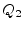
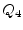
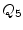
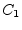

A symmetrical microstrip gap can be modeled by two open ends with a capacitive series coupling between the two ends. The physical layout is shown in fig. 11.6.
The equivalent  -network of a microstrip gap is shown in figure
11.7. The values of the components are according to
[37] and [30].
-network of a microstrip gap is shown in figure
11.7. The values of the components are according to
[37] and [30].
| (11.193) |
| (11.194) | ||
| (11.195) |
with
| (11.196) | ||
|  | (11.197) | |
| (11.198) | ||
|  | (11.199) | |
|  | (11.200) |
with  and  being the open end capacitances of a microstrip
line (see eq. (11.192)). The numerical error of the
capacitive admittances is less than mS for
being the open end capacitances of a microstrip
line (see eq. (11.192)). The numerical error of the
capacitive admittances is less than mS for
The Y-parameters for the given equivalent small signal circuit can be written as stated in eq. (11.201) and are easy to convert to scattering parameters.